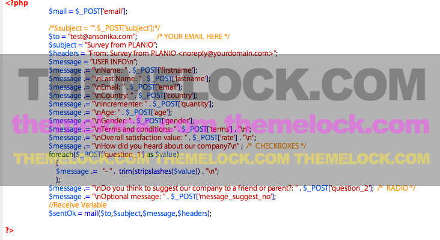

Created: 1 December 2013
Last update: 30 September 2014
By: Ansonika
Website/support: www.ansonika.com
Thank you for purchasing my theme. If you have any questions that are beyond the scope of this help file, please feel free to email via my user page contact form here. If you are happy with the theme, please TAKE A MOMENT TO RATE IT on the ThemeForest website. Thanks so much!
HOW TO UPDATE FROM PREVIOUS VERSIONS:
1) Remove from the html form the action link
<form id="custom" action="" method="POST" > ...leave it blank.... action="" 2) In the html form add the hidden field <input id="website" name="website" type="text" value="" >
with the value empty...and remove the comment beside. 3) update js/functions.js for each versions of Annova 4) In css/style.css add this class input#website {display: none;}
This theme has a fixed centered layout 1170px. It's based on Boostrap 3 framework grid.
It' comes with a one page full version with some additional features or a standalone version.
The css files are inside the css folder.
To modify colors, typografy, button style ecc....find the realtive commen line in base.css. Below how the file is organized:
STYLE.CSS STRUCTURE:
1. SITE STRUCTURE and TYPOGRAPHY
2. CONTENT
3. FORMS
3. COMMON
4. MEDIA QUERIES
Change the logo
To change the logo, simply use your PNG24 file. Keep in mind you have to setup the dimensions of your logo.
OPEN STYLE.CSS
#logo a{
text-indent:-99999px;
background: url(../img/logo.png) no-repeat 0 0;
display:block;
height:35px;
width:135px;
}
});
Change the main background color
Open style.css search for the comment line /** Header ==================== **/.....then modify this class
#top-area {
background-color:#1ab9a7;
height: 500px;
}
Add one more step to the wizard
Each step is defined by a div, so simply duplicate one of them. Below an example of the structure:
<div class="step">
<div class="row">
<h3 class="col-md-10">Enter your personal info</h3>
<div class="col-md-10">
.....
</div><!-- end col-md-10 -->
</div><!-- end row -->
</div><!-- end step-->
Make an input field, select or radio/checkbox required or not.
Simply add or remove the class "required" to the element.
Add one more question with checkbox answer
Open the HTML page. As you can see the name of the input has to be the same with at the end [], each one have a different value.
<h3>How did you hear about our company?</h3> <ul class="data-list-2">Open survey survey_send_1.php and add the lines of code in bold into the the existing code
<li><input name="question_3[]" type="checkbox" class="required" value="Google"><label>Google</label></li>
<li><input name="question_3[]" type="checkbox" class="required" value="A friend"><label>Friend</label></li> <li><input name="question_3[]" type="checkbox" class="required" value="Print"><label>Print</label></li> </ul>
$mail = $_POST['email'];
/*$subject = "".$_POST['subject'];*/
$to = "test@ansonika.com";
$subject = "Survey from ANNOVA";
$headers = "From: Survey from ANNOVA ";
$message = "USER INFO\n";
$message .= "\nName: " . $_POST['firstname'];
$message .= "\nLast Name: " . $_POST['lastname'];
$message .= "\nEmail: " . $_POST['email'];
$message .= "\nCountry: " . $_POST['country'];
$message .= "\nHow many children: " . $_POST['quantity'];
$message .= "\nAge: " . $_POST['age'];
$message .= "\nGender: " . $_POST['gender'];
$message .= "\nTerms and conditions: " . $_POST['terms'] . "\n";
$message .= "\nOverall satisfaction value: " . $_POST['rate'] . "\n";
$message .= "\nHow did you heard about our company?\n" ;
foreach($_POST['question_1'] as $value)
{
$message .= "- " . trim(stripslashes($value)) . "\n";
};
$message .= "\nDo you think to suggest our company to a friend or parent?: " . $_POST['question_2'];
$message .= "\nYour question?\n" ;
foreach($_POST['question_3'] as $value)
{
$message .= "- " . trim(stripslashes($value)) . "\n";
};
$message .= "\nOptional message: " . $_POST['message_suggest_no'];
//Receive Variable
$sentOk = mail($to,$subject,$message,$headers); Branching wizard: user see different steps depending on his answers.
First of all start to work on the correct template version...take the standalone_brunch folder. As you can see each branch is defined by the value on the first step branch and the id. Each branch must have the class="branch". Take care on the last step that is little different.
<div class="step row" data-state="branchtype">
<div class="col-md-10">
<h3>Are you satisfied about the service provided?</h3>
<ul class="data-list-2" >
<li><input type="radio" name="branchtype" value="notsatisfied" id="NotSatisfied" /><label>..</label></li> <li><input type="radio" name="branchtype" value="satisfied" id="Satisfied" /><label>...</label></li> </ul>
</div> <div class="branch" id="notsatisfied">
<div class="step row" data-state="end">
<div class="col-md-10">
<h3>Why are you not satisfied?</h3>
<ul class="data-list-2">
<li><input name="question_1[]" type="checkbox" value="Poor variety of service" class="required" >..</li>
<li><input name="question_1[]" type="checkbox" value="Bad support" class="required" >..</li>
</ul>
</div>
</div>
</div><!-- end step --> <div class="branch" id="satisfied">
<div class="step row" data-state="end">
......
</div>
</div><!-- end step --> <div class="submit step" id="end">
<i class="icon-check"></i>
<h3>Survey complete! Thank you for you time.</h3>
<button type="submit" name="process" class="submit">Submit the survey</button>
</div><!-- end submit step -->
Tweet feed settings
Open jquery.tweetable.js, and set that part of code that you find at the bottom of the page.
// Define plugin defaults
$.fn.tweetable.options = {
limit: 2, // Number of tweets to show
username: 'ansonika', // @username tweets to display
time: true, // Display date
rotate: true, // Rotate tweets
speed: 5000, // Speed of rotation
replies: false, // Filter out @replys
position: 'append', // Append position
failed: "No tweets available", // Twitter stream unavailable text
html5: false, // HTML5 Support
retweets: false, // Show retweets
onComplete: function($ul) {} // On complete callback
};
Branching wizar advanced: take the files in standalone_branch_advanced as reference.
In this case after the user fill with the personal info has two questions, then on third start the branch: if select the first option he continue with other questions, if select the second option go to the end of the survey.
<div class="step row" data-state="branchtype">
<div class="col-md-10">
<h3>Are you satisfied about the service provided?</h3>
<ul class="data-list-2" >
<li><input type="radio" name="branchtype" value="notsatisfied" id="NotSatisfied" /><label>---</label></li> <li><input type="radio" name="branchtype" value="satisfied" id="Satisfied" /><label>----</label></li>
</ul>
</div>
</div><!-- end step question 3 start branch--> The step where the branch start must have data-state="branchtype"on the step container and the input must
have the same name name="branchtype".
1) The value param define where that option point...the example below is how the first option goes to the
notsatified branch: <div class="branch" id="notsatisfied">
<div class="step row" data-state="branch-1-step-1">
<div class="col-md-10">
<h3>Branch 1 Question 1?</h3>
------
</div>
</div>
</div><!-- end step question 4 branch1 --> The data-state="branch-1-step-1" define the the next branch question...whre is declared with an id: <div class="branch" id="branch-1-step-1">
<div class="step row" data-state="branch-1-step-2"> NEXT STEP
<div class="col-md-10">
<h3>Branch 1 Question 2?</h3>
-----
</div>
</div>
</div><!-- end step question 2--> 2) The example below it's about if the user select the second option in the branch...so go to the end of
the wizard (value="satisfied"): <div class="submit step complete" id="satisfied">
<i class="icon-check"></i>
<h3>Survey complete! Thank you for you time.</h3>
<button type="submit" name="process" class="submit">Submit the survey</button>
</div><!-- end submit step -->
The logic and parameters to keep in mind are the value and the data-state. Remember to edit the php file
properly in order to send the data. Attention to write correctly the name of each input and the value; for
example radio inputs must have the same name and different value. THIS EXAMPLE IS FOR A SINGLE BRANCH OPTION.
How to quick update the Input Switch (YES/NO terms):
1) Update jquery.switch.css in the css folder.
2) Update functions.js (note: take the updated file from the respective wizard type...full, standalone, etc) 3) Open the html page and cahnge this lines of code:
<div style="position:relative">
<select class=" example-1 required" name="terms">
<option value="">No</option>
<option value="Accepted">Yes</option>
</select>
</div>
INTO <label class="switch-light switch-ios">
<input type="checkbox" name="terms" class="required fix_ie8" value="yes">
<span>
<span class="ie8_hide">No</span>
<span>Yes</span>
</span>
<a></a>
</label> 4) Add this style to each radio or checkbox input like below (except for the switch button):
<input name="gender" type="radio" class="required check_radio" value="Male"> and remove this line from bottom: <script src="js/jquery.switch.min.js"></script>
How to quick update the Twitter feed:
1) Choose the Annova version (Standalone, Full, ETc...) 2) Copy the entire folder "twitter folder" 3) Copy the updated js/functions.js 4) Copy from the js folder these files: jquery.bxslider.min.js, jquery.tweet.js, jquery.tweet.min.js. 5) From style.css copy the new styles under the section /* twitter feed*/ 6) from the html page copy the new html code and set your twitter username
Fix Backward issue with validation:
Open function.js and add these line at top of beforeSelect if (!state.isMovingForward) return true; BECAME // WIZARD ===============================================================================
jQuery(function($) {
// Basic wizard with validation
$("#survey_container").wizard({
stepsWrapper: "#wrapped",
submit: ".submit",
beforeSelect: function( event, state ) {
if (!state.isMovingForward)
return true;
var inputs = $(this).wizard('state').step.find(':input');
return !inputs.length || !!inputs.valid();
}
Below the code of the php file that process and send the email.

If you doesn't recieve the email please first check:
1) Your spam folder
2) If you hosting requires special settings and support php language
3) If your email has to be managed from the same hosting provider
This theme use These Javascript.
Inlcuded with the theme there is a basic structure psd, and two psd with the radio anc checkbutton graphics (@2x is for retina images) You can edit and change the color as you wont; if you change the sizes of theme be sure to update the css located here: check_radio/skins/square/aero.css.
I've used the following scripts, plugins or frameworks as listed.
Once again, thank you so much for purchasing this theme. Please take a moment to rate it from your Downloads page.
Ansonika